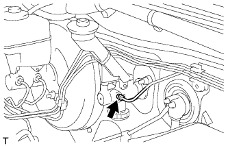
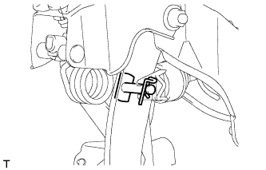
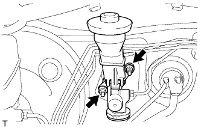

ГЛАВНЫЙ ЦИЛИНДР СЦЕПЛЕНИЯ (для моделей с правосторонним рулевым управлением) > СНЯТИЕ |
| 1. СЛЕЙТЕ ТОРМОЗНУЮ ЖИДКОСТЬ ИЗ ТРУБОПРОВОДА ПРИВОДА СЦЕПЛЕНИЯ |
| 2. ОТСОЕДИНИТЕ ГИБКИЙ ШЛАНГ |
|  |
С помощью разрезной головки отсоедините трубопровод гибкого шланга.
| 3. СНИМИТЕ ГЛАВНЫЙ ЦИЛИНДР СЦЕПЛЕНИЯ В СБОРЕ |
|  |
Освободите фиксатор и снимите штифт.
|  |
Отверните 2 гайки и снимите главный цилиндр сцепления.
Снимите прокладку.